McNetik Run
Project Info
Role: Game Developer
Team Size: 1
Time: In Progress
Technologies: Unity, C#, Firebase, Blender, Substance Painter
Introduction
McNetik Run was born as a solo university project for the 3D Character Design subject, where the main goal was to model, texture, and animate a robot. I was getting tired of creating projects that were only meant to be graded and then forgotten. At that time, I had endless runner mechanics on my mind, so I decided to turn my character into the protagonist of a real game.
The result is McNetik Run, a 3D endless runner where the goal is to dodge obstacles and achieve the highest possible score. Inspired by the success of Subway Surfers, the game features the classic three-lane structure with swipe-based controls: swipe left or right to change lanes, swipe up to jump. However, I wanted the movement to make sense for the character.
🤖 Who is McNetik?
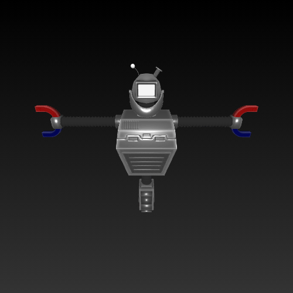
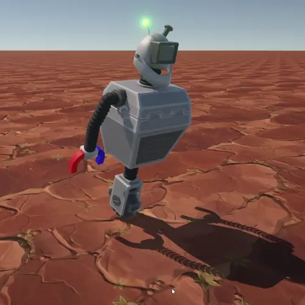
McNetik is a robot with a single wheel instead of legs, and magnetic arms powered by electromagnetism. Crouching didn't really fit this design, so I replaced that mechanic with a special ability: using his electromagnet to open locked electric doors.
🎭 Visual & Narrative Context
The setting is a giant spaceship, visually inspired by Star Wars interiors — long, seemingly endless hallways. The story is simple: McNetik is caught vandalizing and has to flee through the corridors as fast as possible.
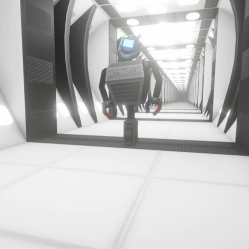
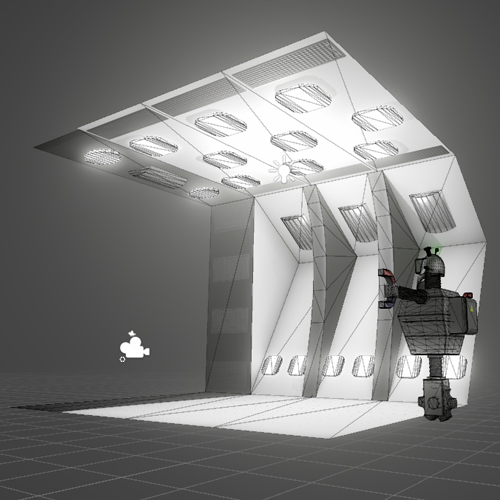
🧱 Obstacles
- Electric Doors Can be opened by swiping down, but only when close enough to trigger them.
- Explosive Crates Must be dodged by switching lanes.
- Land Mines Can be avoided by jumping or changing lanes.
⚡ Power-ups
- Nuclear Battery Temporarily gives McNetik full electromagnet power, destroying obstacles in his path.
- Magnet Power Attracts nearby coins.
- X2 Multiplier Doubles all coins collected during a limited time.
🧪 v0.2.0 (Development Log)
Apologies for the delay in releasing this version! This is a project I’m developing during my free time—between work and other responsibilities. However, I’m optimistic that from July onwards I’ll be more productive and able to release updates more frequently.
Now, focusing on what’s new: version 0.2.0 introduces six core features that start giving shape to the gameplay and its economy:
- 🔄 Loading screen while connecting to the database>
- 👾 Enemy that mimics the player’s movement
- 📊 Boost indicator with timer
- 🛍️ Shop and skin selection system
- 👔 First McNetik Skin
- 🎓 In-game Tutorial
🔄 Loading screen
The project runs on a single Unity scene, as it doesn’t need to instantiate a huge variety of elements. Still, connecting to the database can sometimes be delayed depending on connectivity. If the game starts before a successful connection, it can cause serious serialization and persistence issues with player data.
To handle this, I created a loading screen using a simple canvas that says “Loading...”. The game waits until the database is ready before showing the main menu.
This is done with a coroutine that pauses the game until FirestoreManager.cs -> DataBaseIsReady() returns true. Once connected, the canvas disappears and everything works normally.
💡 Technical note: I’ve realized many classes are tightly coupled to the database logic. While this doesn’t impact the current game, it would be problematic if I wanted to reuse any scripts in another project. Moving forward, I plan to refactor using interfaces or event-based systems to reduce this coupling.
👾 Enemy Follows the Player
The script PlayerMovement.cs handles both player movement and the logic to control the enemy via EnemyMovement.cs. The enemy essentially mirrors the player’s movements with a slight delay using coroutines.
For example, when the player swipes left, the script calls EnemyMovement.MoveLeft() with a WaitForSeconds(delayMovement). After the delay, the enemy moves to the left lane.
public IEnumerator MoveLeft()
{
yield return new WaitForSeconds(delayMovement);
currentLane--;
targetPosition = new Vector3(lanePositions[currentLane],
transform.position.y, transform.position.z);
}
📊 Boost Indicator
I implemented a UI canvas that displays active boosts. The system dynamically shows which boosts are currently active and how much time is left before they expire.
🛍️ Shop and Skin Selection System
There are two main canvases: Shop and Skin Selector. Both use a RawImage and a preview camera to show the selected skin in real-time.
- The Shop checks which skins the player owns in the database, and loads available skins from
Assets/Resources. This allows me to load assets like models, UI, or prefabs dynamically and only when needed (not at the game’s startup). - Clicking a skin loads it from Resources and displays it in the preview. If the player has enough coins, they can purchase it. The skin's ID is then saved in the database.
- The Skin Selector works similarly, but only shows already-owned skins for equipping.
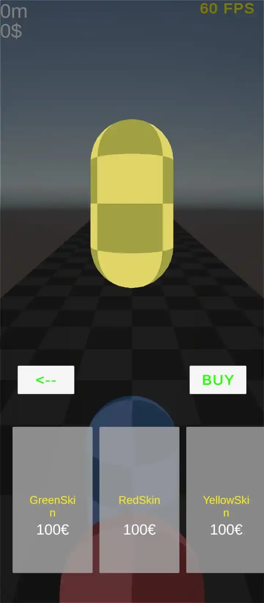
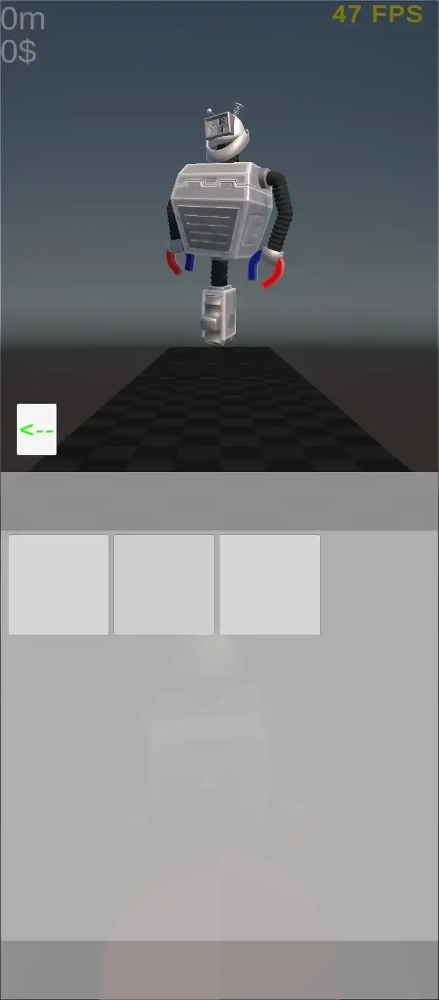
👔 First McNetik Skin
The first character skin—McNetik—has been added, including a basic idle animation. This was an important visual step. I plan to add more detailed animations soon (running, jumping, collisions, etc.).
🎓 In-game Tutorial
Initially, I considered building a new scene just for the tutorial, but that meant duplicating a lot of logic, references, and even scripts. Instead, I decided to adapt the main scene using a TutorialManager.cs.
The tutorial manager handles:
- Showing instructions through a custom pop-up system (text + button)
- Pausing/resuming different gameplay systems like obstacle spawning and player movement
- Sequencing tutorial steps using coroutines with time delays or gameplay conditions (e.g. “wait until 20 coins are collected”)
Here’s a simplified example of how the tutorial is structured:
yield return StartCoroutine(InstantiatePopUpUI(
"Now collect 20 coins.", "Try"));
playerMovement.SetSwipeState(true);
endlessManager.SetGenCoinsState(true);
endlessManager.SetPausedState(false);
yield return new WaitUntil(() => nCoins >= 20);
endlessManager.SetGenCoinsState(false);
The tutorial teaches players how to:
- Move horizontally
- Dodge explosives
- Use special powers to open doors
- Avoid mines by jumping
It ends with a message encouraging the player to try the full game mode.
🧭 Navigation Flow Diagram
The game's navigation flow is structured within a single Unity scene. Instead of switching scenes, it uses multiple Canvas objects to display different interfaces (menus, shop, tutorial, etc.), which are activated or deactivated depending on the current state of the game.

-
Loading Screen
- This is the first Canvas displayed when the game starts.
- It remains visible while retrieving data from Firebase Firestore.
- Once the data is loaded, it hides and the main menu is shown.
-
Main Menu
Contains four buttons, each leading to a different section of the game:-
Start Game
- Hides the main menu Canvas.
- The
EndlessManager.csscript changes from a paused to an active state. - The player starts moving, and the game enters the endless runner mode.
- When the player dies, the scene reloads and returns to the Loading screen.
-
Go Shop
- Hides the main menu and activates the shop Canvas.
- Displays a 3D preview of the selected skin rotating.
- Includes buttons to buy and to go back.
- The back button returns to the main menu.
-
Go Skins (skin selector)
- Similar to the shop, but without a buy button.
- When a skin is selected, it is automatically set as the active one for gameplay.
- Also includes a button to return to the main menu.
-
Tutorial
- Hides the main menu.
- Configures the
EndlessManager.csto enter tutorial mode. - Instantiates the
TutorialManager.cs, which has access toEndlessManager.cs. - Also interacts with
PlayerMovement.csto pause or resume the player based on the tutorial's needs. - The
TutorialManagercontrols tutorial progression using coroutines, managing time or other conditions to display different instructional texts. - It pauses and resumes the game depending on the current tutorial phase.
- Once the player finishes or fails the tutorial, the scene is reloaded and returns to the Loading screen.
-
Start Game
🧪 v0.1.0 (Development Log)
The first thing I did was open Unity… and then I thought: "Now what?". I decided to start with the fundamentals. A game like this is not a game unless the player can interact. So I focused first on implementing the core controls — swipe-based input in the 4 directions.
🎮 Swipe Controls
- Swipe Left / Right: This allows the player to switch between lanes. The world consists of three logical lanes, and the player should not be able to move outside of them.
To manage this, I created an array with three float values:
[SerializeField] float[] lanePositions = { -2, 0, 2 };This array can be modified from the Unity Inspector thanks to SerializeField. The values represent the X positions of the three lanes. Since this is an endless runner, the player doesn’t move forward — instead, the world moves toward the player to simulate motion and optimize performance.
I also track the current lane with an integer:int currentLane = 1;When the player swipes left, currentLane is decremented (as long as it’s greater than 0); swiping right increments it (as long as it's less than lanePositions.Length - 1). This also keeps the system flexible in case I ever want to add more lanes in the future (although I probably won’t, haha).
- Swipe Up: Swiping up causes the player to jump, but only if grounded, to prevent double jumps or jumping mid-air.
- Swipe Down: Swiping down activates McNetik’s electromagnetic ability to open locked electric doors — but only when within trigger range, to avoid activating doors that are too far away.
♾️ Endless Runner Effect
The core concept of an endless runner is to simulate infinite movement without actually moving the player. The illusion is created by moving the environment toward a stationary player.
To build this system, I created a script called EndlessRunnerManager.cs. It manages the spawning of modular platforms and simulates movement by constantly shifting the platforms toward the player.
The environment is composed of a configurable number of platforms — currently 5, but this number can be changed. Each platform is a prefab that contains:
- 3 lane points for obstacle spawning.
- Nx3 grid points across the platform for placing pickups.
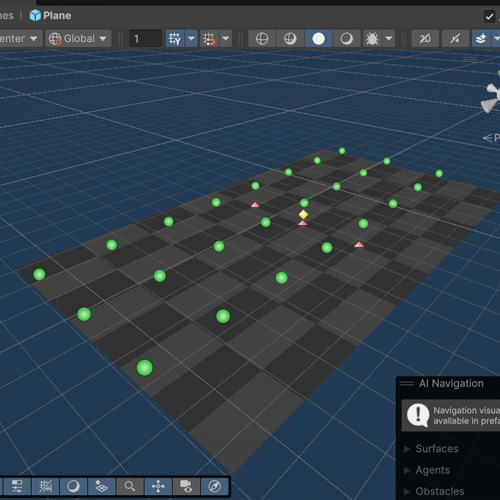
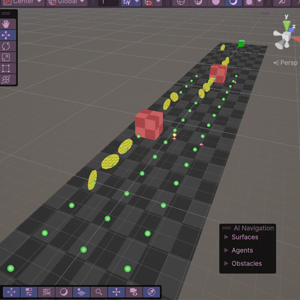
This creates a dynamic grid for controlled obstacle and pickup generation.
📈 Difficulty Curve & Obstacle Spawning
I implemented a progressive difficulty system:
- Speed increases over time using an acceleration curve that eventually plateaus.
- Obstacles start simple and become more complex as time passes.
Currently, obstacles are instantiated and destroyed, which is not ideal for performance. In a future update, I plan to replace this with an object pooling system to reuse objects from memory and optimize runtime efficiency.
💥 Collision Manager
I developed a dedicated collision manager that handles:
- ⚡ Boost pickups
- 🪙 Coin collection
- 💀 Player death
Each type of boost has its own coroutine slot. This allows multiple boosts to be active at the same time, and if the player collects the same boost again, its effect resets. I chose this approach because it offers a balanced gameplay experience — simple, but powerful enough to handle overlapping effects cleanly.
☁️ Firebase Integration
To track player progress, I integrated Google Firestore (Firebase). I initially wanted to implement Google account authentication, but due to Firebase SDK incompatibilities with Unity 6, I settled for anonymous authentication.
This lets me store user-specific data per device instance:
- High scores
- Coins
- (Planned) Skins & Store system
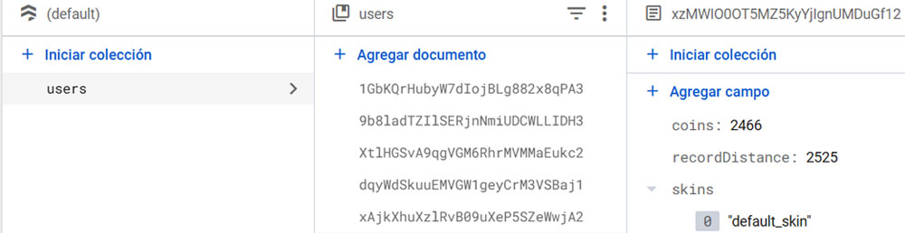
🎨 Visuals & Art Style (Temporary)
This version doesn't use 3D models — I focused purely on mechanics. For visuals, I used Unity's default geometric primitives (cubes, spheres, etc.) and created a custom shader that displays color variations in a checkered pattern, similar to a chessboard grid, to help visually distinguish interactive elements.
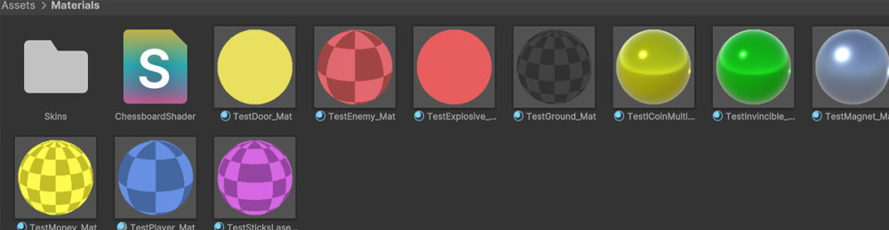
🚀 Publishing on Google Play (Closed Testing)
During this version, I also took the opportunity to set up my Google Play Developer account and begin experimenting with the publishing process.
I submitted v0.1.0 as a Closed Testing release, using it as a learning experience to understand the full publication pipeline — from uploading the build to passing Google’s review policies.
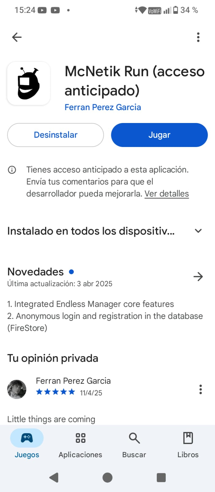
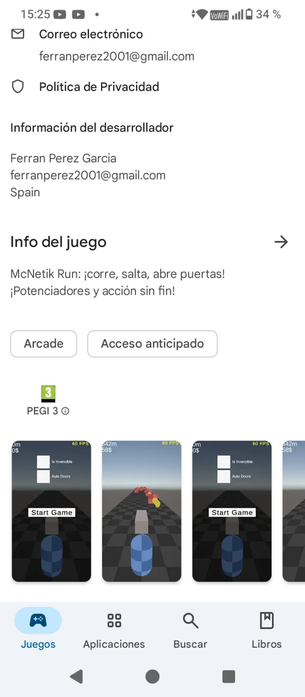
This was not just a technical step, but also an important professional milestone:
- I learned how to prepare and sign builds correctly for Android.
- I became familiar with Google Play Console , including setting up listings, configuring countries, testers, and release tracks (internal, closed, open).
- Most importantly, I gained firsthand experience with Google’s automated review and rejection system.
In fact, this version was rejected several times over a span of 3 days, and I had to iterate quickly to understand the causes, update metadata, adjust permissions, and recompile APKs until the release was finally accepted.
Through this process, I learned how to:
- Interpret rejection messages from Google (which are sometimes vague).
- Comply with content and permission policies (e.g., Privacy Policy, data access declarations).
- Debug issues that only appear on real Android devices or in signed builds.
This learning curve was essential for preparing future production-ready releases. Now, I feel confident navigating the Google Play ecosystem and handling publishing challenges efficiently.